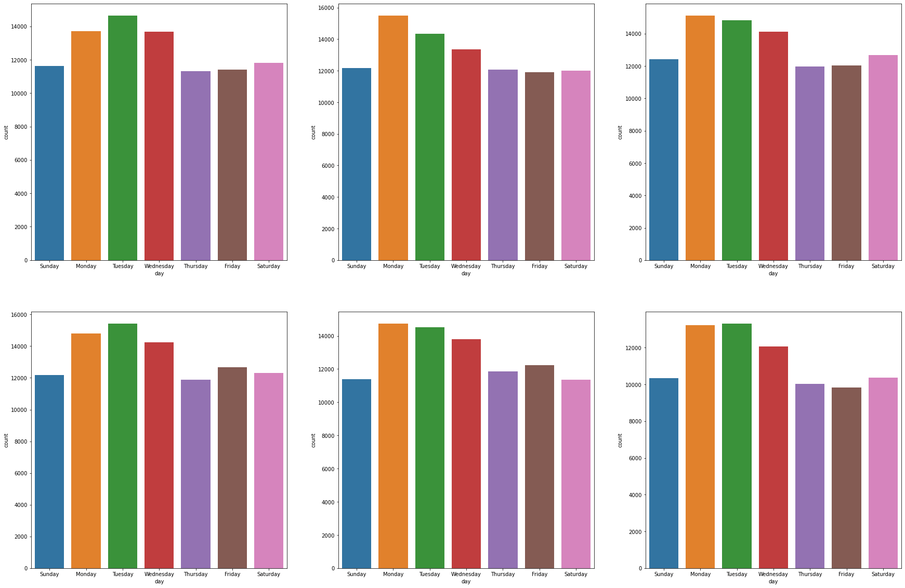

Adding Axis Lables
plt.rcParams['figure.dpi'] = 360
sns.set(style="whitegrid")fig, ax = plt.subplots(figsize=(12,4))
sns.barplot(data=data, x="severity", y="freq", palette=['#eb3434', '#eb7a34', '#ebae34'])
plt.xlabel('')
plt.ylabel('Number of Accidents', size=18, color='#4f4e4e')
plt.title('Number of Accidents By Severity', size=18, color='#4f4e4e')
plt.xticks(size=14, color='#4f4e4e')
plt.yticks(size=14, color='#4f4e4e')
plt.text(x=1, y=48, s='Most accidents were low severity',
color='#4f4e4e', fontsize=12, horizontalalignment='center')
plt.text(x=0, y=2, s="10",
color='white', fontsize=18, horizontalalignment='center')
plt.text(x=1, y=2, s="25",
color='white', fontsize=18, horizontalalignment='center')
plt.text(x=2, y=2, s="50",
color='white', fontsize=18, horizontalalignment='center')
sns.despine(left=True);
Creating Subplots
fig,ax=plt.subplots(2,3,figsize=(30,20))
order = ['Sunday', 'Monday', 'Tuesday', 'Wednesday', 'Thursday', 'Friday', 'Saturday']
fifteen = df_year[2015]
a = sns.countplot(ax=ax[0,0], x='day', data=fifteen, order=order)
sixteen = df_year[2016]
b = sns.countplot(ax=ax[0,1], x='day', data=sixteen, order=order)
seventeen = df_year[2017]
c = sns.countplot(ax=ax[0,2], x='day', data=seventeen, order=order)
eighteen = df_year[2018]
d = sns.countplot(ax=ax[1,0], x='day', data=eighteen, order=order)
nineteen = df_year[2019]
e = sns.countplot(ax=ax[1,1], x='day', data=nineteen, order=order)
twenty = df_year[2020]
f = sns.countplot(ax=ax[1,2], x='day', data=twenty, order=order)
Out:
